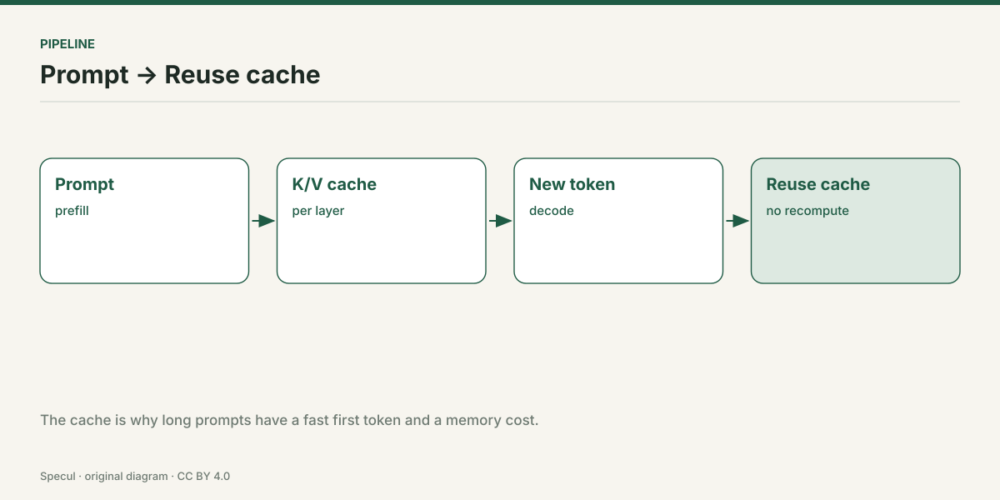

KV 缓存KV Cache
KV Cache
解决什么问题What problem it solves
让模型逐字生成时不用每一步都重算整段话，生成速度才可用。Stops the model recomputing the whole passage on every token it generates — this is what makes generation speed usable.
这是什么What it is
把已经算过的注意力中间结果缓存起来，只为新 token 计算增量。
代价是它持续占用显存——这直接决定了你的显存能撑多长的上下文。
Caching the attention intermediates already computed, so only new tokens need incremental work.
The cost is that it occupies VRAM continuously — which directly caps how long a context you can afford.

为什么需要知道Why it matters
这是本地部署时最常见的 OOM（显存不够）原因。上下文开大就先撞它。It is the most common cause of OOM when deploying locally. Raise the context size and you hit this first.
相关指南Related guides